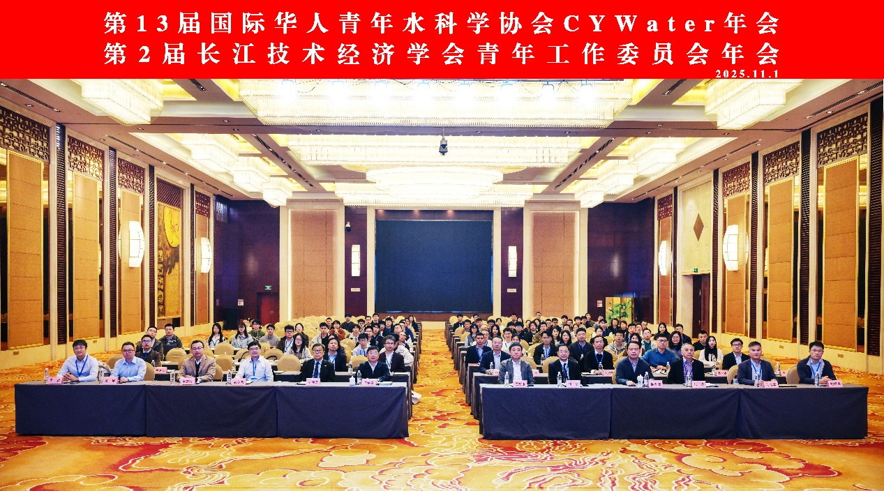
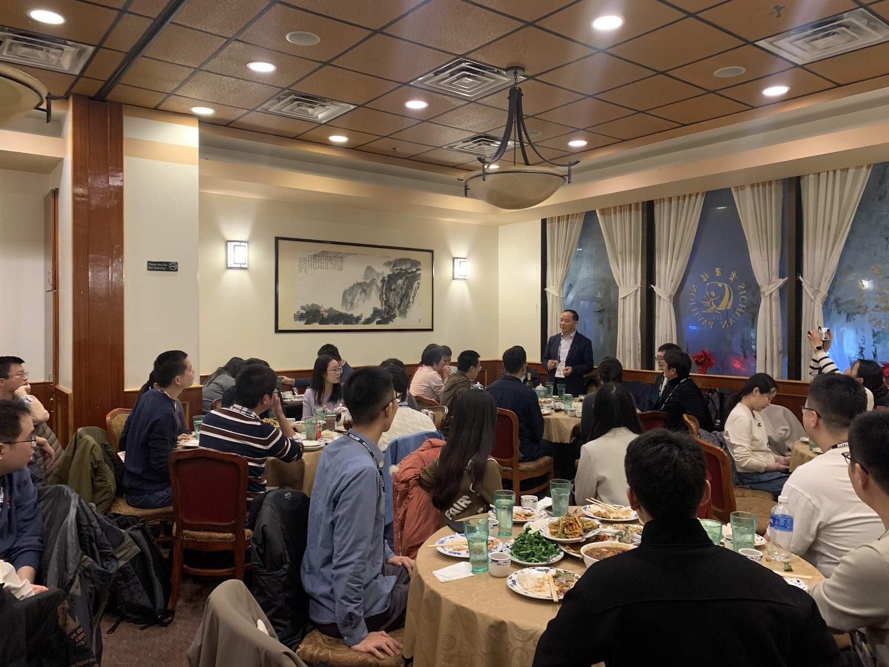
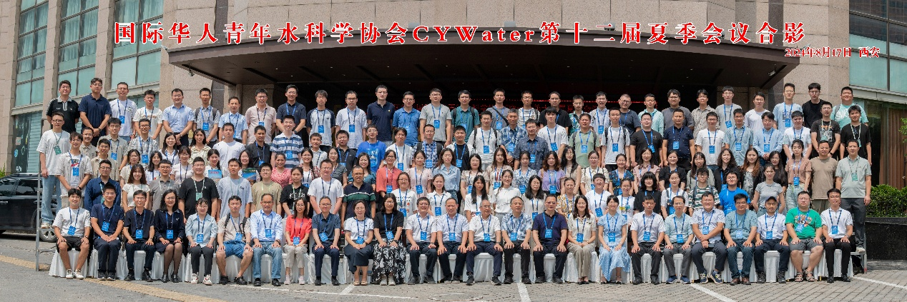

13th Annual Meeting — 3rd round notice
Co-hosted with the Yangtze Technology & Economy Society Youth Committee. Full programme and venue details released.
Read moreAn international, non-profit association advancing water sciences education, research, and professional development — through scientific exchange, publications, and conferences.
CYWater advances water sciences education, research, and professional development by empowering young, early-career, and other professionals through scientific exchange, publications, and conferences.
Our flagship scientific gathering has connected water scholars every year since 2013.
Learn moreA community gathering held during the AGU Fall Meeting, continuing a tradition established in 2011.
Learn moreThe Young Scientist Best Paper Award, recognising outstanding contributions to water sciences since 2012.
Learn moreUniversities, research institutes, industry, societies, and foundations help expand scientific exchange and early-career development.
Learn more
Co-hosted with the Yangtze Technology & Economy Society Youth Committee. Full programme and venue details released.
Read more
Members gathered during AGU24 for community exchange, conversation, and professional connection.
View gathering
Hosted by Xi'an University of Technology. Theme: "Gathering strength for new quality productive forces in water."
Read moreSince 2011, CYWater has connected water scholars through scientific exchange, annual meetings, and the Young Scientist Best Paper Award.